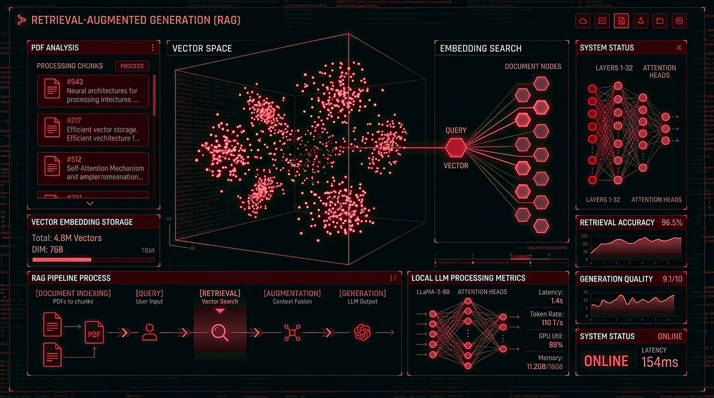

01
FLAGSHIP AI // LOCAL LLM // VECTOR DATABASE
RAG-Powered Document Assistant
Full-stack AI application that lets users ask questions over a PDF document collection and receive grounded answers with document and page citations, running entirely on a local LLM.
- Ingestion Pipeline: Built data ingestion pipeline with PyPDF page-level extraction, text cleaning, and overlapping chunking (800 characters, 150 overlap).
- Embeddings & Vector DB: Generated 384-dimension embeddings with Sentence-Transformers (all-MiniLM-L6-v2) stored in persistent ChromaDB for cosine-similarity top-K retrieval.
- FastAPI Backend: Loaded vector store and embedding model once at startup using the lifespan handler to avoid per-request overhead; Pydantic validation.
- Hallucination Defense: Integrated local Ollama LLM (Llama 3 8B) with a strict grounding prompt so answers cite their source chunks and fall back to a safe response instead of hallucinating.
- Interface & Testing: Streamlit chat interface with citation drawers; written Pytest test suite and containerized with Docker Compose.
Python
FastAPI
ChromaDB
Sentence-Transformers
Ollama (Llama 3 8B)
Streamlit
Docker
Pytest

01 PyPDF Ingestion
02 384-D ChromaDB
03 Llama 3 8B
04 Grounded Citations